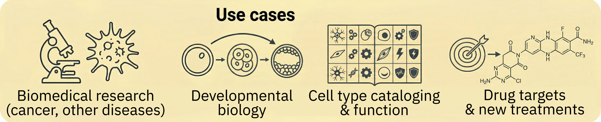
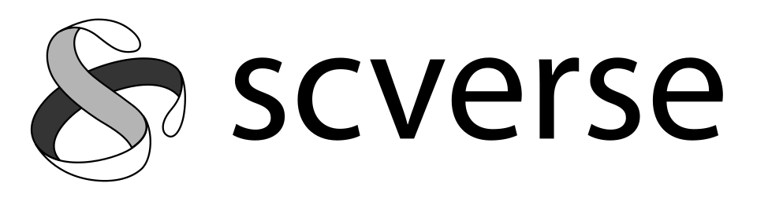
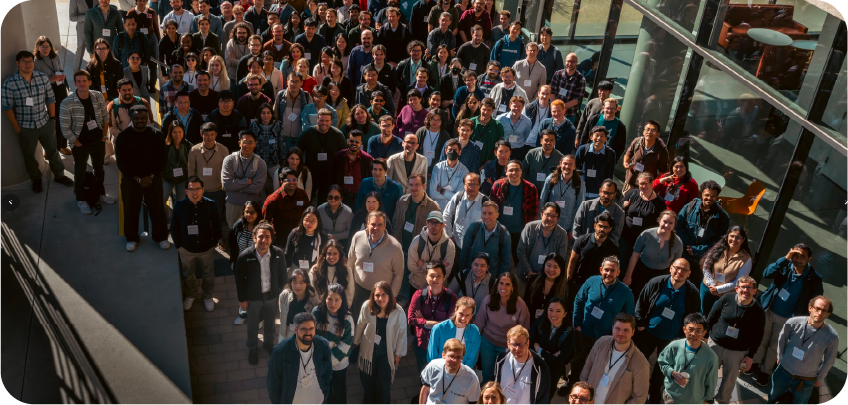

scverse: a software infrastructure for bioinformatics and single-cell biology
deRSE26 — Networking meeting of the projects funded by the DFG funding program “Research Software Infrastructures”
2026-03-03
scverse: a consortium for community-driven software development for single-cell analysis

Software infrastructures for bioinformatics

- Since 2001, >2000 packages
- Distributed, open development model
- Tens of thousands of users
- Broad coverage of bioinformatics; Biostatistics


- Single-cell + adjacent communities (e.g., image analysis)
- Link to modern AI/ML via Python
- Bridge to emerging technologies (Rust, CUDA)
Workshops/conferences/hackathons

2nd scverse conference, Nov 2025, Stanford (US)Software from the scverse community
107
ecosystem
packages
packages
939
dependent
packages
packages
4,650
dependent
repositories
repositories
A community that learns and grows together
1,230
Zulip members
(discussion platform)
(discussion platform)
1,708
Pull requests
(last 365 days)
(last 365 days)
72,569
Daily
downloads
downloads
https://scverse.org/